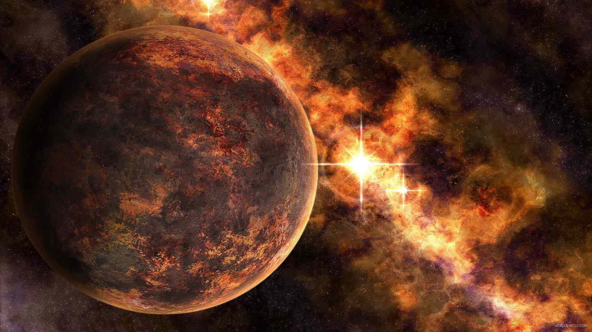

Planet Venus
Venus adalah planet kedua dari Matahari dan dikenal sebagai "bintang fajar" atau "bintang senja" karena cahayanya yang sangat terang di langit Bumi. Dengan diameter sekitar 12.104 kilometer, Venus hampir seukuran dengan Bumi, sehingga sering disebut sebagai "saudara kembar" Bumi. Namun kondisi di Venus sangat berbeda. Planet ini memiliki atmosfer yang sangat tebal dan sebagian besar terdiri dari karbon dioksida, dengan awan asam sulfat yang menyelubungi seluruh planet. Tekanan atmosfer di permukaan Venus sekitar 92 kali lebih besar dibandingkan Bumi, cukup untuk menghancurkan sebagian besar pesawat luar angkasa. Venus memiliki suhu permukaan yang sangat panas, mencapai sekitar 465°C, menjadikannya planet terpanas di tata surya, bahkan lebih panas daripada Merkurius, meskipun Venus lebih jauh dari Matahari. Suhu ekstrem ini disebabkan oleh efek rumah kaca yang tidak terkendali akibat atmosfer karbon dioksida yang tebal.

Fakta unik tentang Venus adalah bahwa planet ini berotasi dalam arah yang berlawanan dibandingkan sebagian besar planet lain di tata surya, sebuah fenomena yang disebut rotasi retrograde. Akibatnya, di Venus, Matahari terbit dari barat dan terbenam di timur. Selain itu, satu hari di Venus (243 hari Bumi) lebih lama daripada satu tahun Venus (225 hari Bumi). Hal ini menjadikan rotasi Venus sebagai yang paling lambat di antara semua planet. Venus juga memiliki lanskap yang menarik, dengan gunung berapi aktif, dataran luas, dan lembah yang dalam. Salah satu gunung tertinggi di Venus adalah Maxwell Montes, yang memiliki ketinggian sekitar 11 kilometer, lebih tinggi daripada Gunung Everest di Bumi.
Untuk informasi lebih lengkap tentang venus silahkan kunjungi Wikipedia